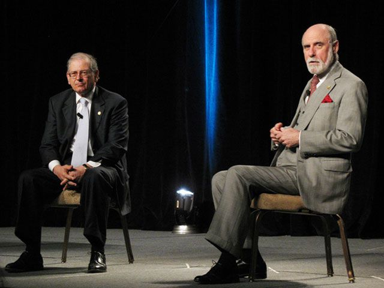

L'origen de la xarxa internet: En 1970, els enginyiers
Bob Kahn i Vint Cerf van començar amb el projecte anomenat ARPANET, com a
resultant d’aquest experiment és el que avui en dia anomenem Internet.
Aquest experiment consistia a crear un sistema de comunicacions que pogués
sobreviure a un atac nuclear.

Sistema de transmissió de dades:
Hi han tres mitjans destacats que s’utilitzen per enviar bits d’un lloc a un altre aquests son l’electricitat, la llum i ràdio d'ones.
Cables:
Fil de vidre dirigit a reflectir la llum. Quan enviem un raig de llum per cable, la llum va amb anit baixos pel cable fins que es rep. Depèn de l'angle del moviment podem enviar diversos bits a la vegada cadascun viatjant a la velocitat de la llum. El cable és més econòmic i a vegades es perd el senyal.
Fibra òptica:
La fibra òptica és molt ràpida i el senyal no es degrada a llargues distàncies. La fibra la utilitzen per terra marí per connectar un continent a un altre. El sistema físic és molt fràgil. És molt costós i pot ser difícil de controlar.
Wifi:
Màquines de bits sense fil que típicament s'utilitzen per a senyals de ràdio per a mana bits d'un lloc a un altre. Les màquines han de traduir els uns i els zeros en ones de ràdio de diverses freqüències. La màquina que rep i realitza el procés en invers i el converteix en un codi binari per al vostre ordinador. És totalment mòbil, però els senyals de ràdio no viatgen gaire lluny abans que es distorsionin.
Adreça IP:
És la direcció de cada ordinador que permet demanar informació a un altre ordinador enviant un missatge a l'adreça IP, aquest a més sap l’adreça IP de l’altre per poder retornar la resposta.
Protocol IP:
Dirigeix paquets de dades perquè puguin viatjar a través de les xarxes i arribar al destini correcte.
DNS:
Els servidors DNS s’organitzen en una jerarquia i es didvideixen en zones, separant en parts els dominis més importants. Consulta a servidors locals, per obtenir les adreces IP associada a un domini.
Router:
Es un menejador de tràfic que manté els paquets, moguen a través de la xarxa sense problema.
Protocol TCP:
És el mètode de comunicació de dades per defecte entre diferents dispositius, mitjançant una xarxa. Aquest estableix i manté una connexió entre l'emissor i el receptor durant el procés de transferència.
HTTP:
És un protocol de comunicació utilitzat per la transmissió de dades en la web. Comunica principalment als navegadors web amb servidores web.
HTML:
És el llenguatge estàndard fet servir per crear pàgines web.